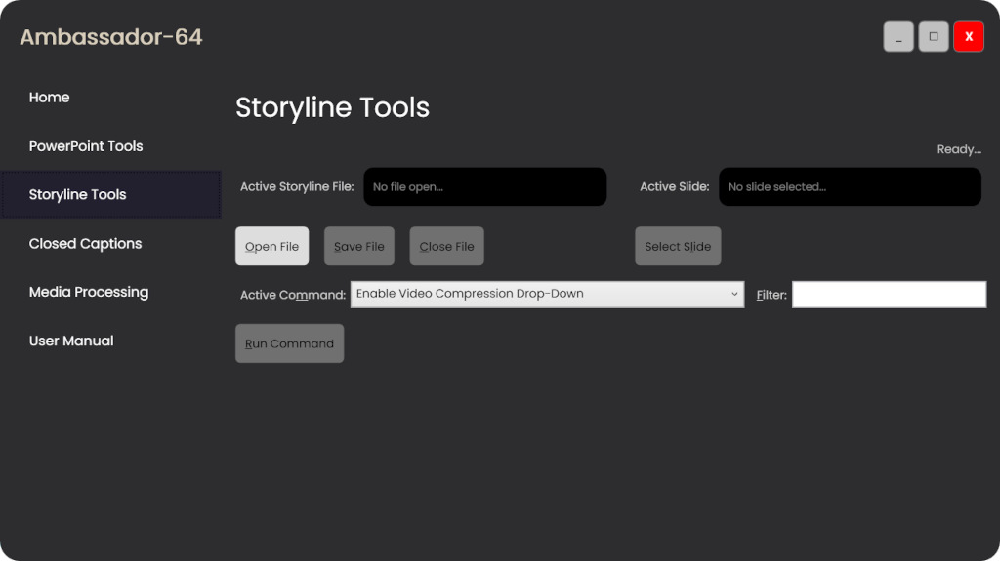

Check here for updates and support on our EdTech products.
User Manual - Table of Contents
Click any of the following links to open that page.
PowerPoint Tools
Individual functions for saving time in PowerPoint.
- Using PowerPoint Tools.
General usage information like opening the file, selecting a slide,
and running the command.
- Convert Placeholders to Textboxes.
Convert PowerPoint generic placeholder objects to specific-purpose textboxes.
- . Export shape
information from the active PowerPoint slide to a text-based
comma-separated values (CSV) format. Use with
Import Shape Info from CSV for bulk
update to object size and position.
- Import Shape Info from CSV. Import shape
information from a text-based comma-separated values (CSV) file into
the active PowerPoint slide for bulk update of object sizes and
positions.
- Position Objects. Quickly and
accurately position the objects on the active PowerPoint slide.
- Quick Animation. Apply
consistent animation to one or more objects using a fast, narrowly
focused method.
- Remove Bullet From Paragraphs. Remove the
bullet character from all selected paragraphs.
- Text and Shape Alignment.
Align and distribute text and shapes vertically and horizontally.
Storyline Tools

Individual functions that help you bypass limitations and to achieve a
much higher level of productivity than is common for Articulate
Storyline.
- Using Storyline Tools. General
usage information like opening the file, selecting a slide, and
running the command.
- Export Focus Order to CSV File. Export
focus order information about your Storyline file to a text-based
comma-separated values (CSV) file, allowing you to directly sort all
of your objects in an external application like Microsoft Excel.
- Export Media References To CSV File. Keep
track of all of your working media files externally of the Storyline
application.
- Import Focus Order from CSV File. Import
sorted focus order information into your selected Storyline file
from a text-based comma-separated values (CSV) file.
- Import Media References from CSV File. Update paths
and filenames of source filenames in your Storyline
file to keep those files dynamically updateable when they are
changed externally.
- Improve Video.
Storyline is known to degrade media when publishing in certain
cases. Use this workaround after publishing your project to restore
the high-quality compressed video you had previously prepared for
output.
- Refresh Media from Sources. Refresh one,
some, or all of your media files from their original source
locations on your hard drive. Extremely useful whenever you revise
or update your master content.
- Set Alternate Text. Edit and update
alt text for all objects on a slide.
- Set Focus Order. Edit and update
focus order locations for all objects on a slide. Simultaneous
dragging and dropping of multiple items is supported.
- Set Timeline Names. Automatically
give appropriate names to all timeline objects that have not yet
been named.
- Transfer Focus Order From PowerPoint Slide.
When importing slides from PowerPoint, Storyline ignores the focus
order of the source presentation. Use this command after importing
slides from a PowerPoint file to restore the focus order you had
previously configured on that file.
Closed Captions
Fully functional closed caption editor with quick positioning and
editing features.
Media Processing
Individual functions for processing stand-alone media such as video,
audio, and images.
- Using Media Processing.
General use of the media processing main window and its controls.
- Video Compression.
Quick and easy video compression helps you to drastically reduce the
size of your media file without loosing any noticeable quality.